正·玄色系
| 名称 | HEX | RGB | CMYK | 展示 | 黝黑 | #655756 | R:101 G:87 B:86 | C:56 M:58 Y:55 K:28 |
黝黑色是一种深沉如墨的纯黑色，浓郁厚重却不失光泽，如同无星之夜或历经岁月打磨的黑釉，透出庄重而神秘的东方美学意蕴。 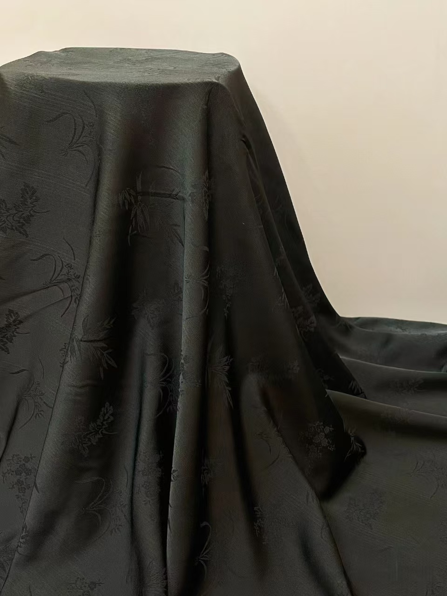 |
黯色 | #3f545b | R:63 G:84 B:91 | C:76 M:55 Y:51 K:30 |
黯色是一种深沉晦暗的灰黑色，如暮色四合时的天光，朦胧幽邃，既含墨色的浓重，又透出岁月沉淀的斑驳质感。 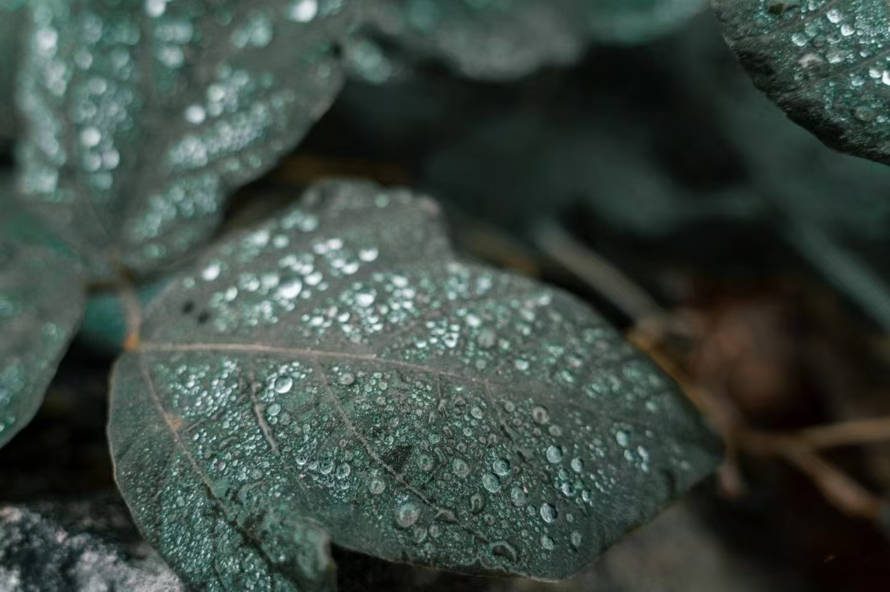 |
墨色 | #0b1611 | R:11 G:22 B:17 | C:77 M:63 Y:69 K:81 |
墨色是一种浓重典雅的深黑色，如砚台中化开的松烟墨，既有墨锭的乌润光泽，又透出笔锋水痕的细微层次，沉淀着文人的书卷气息。 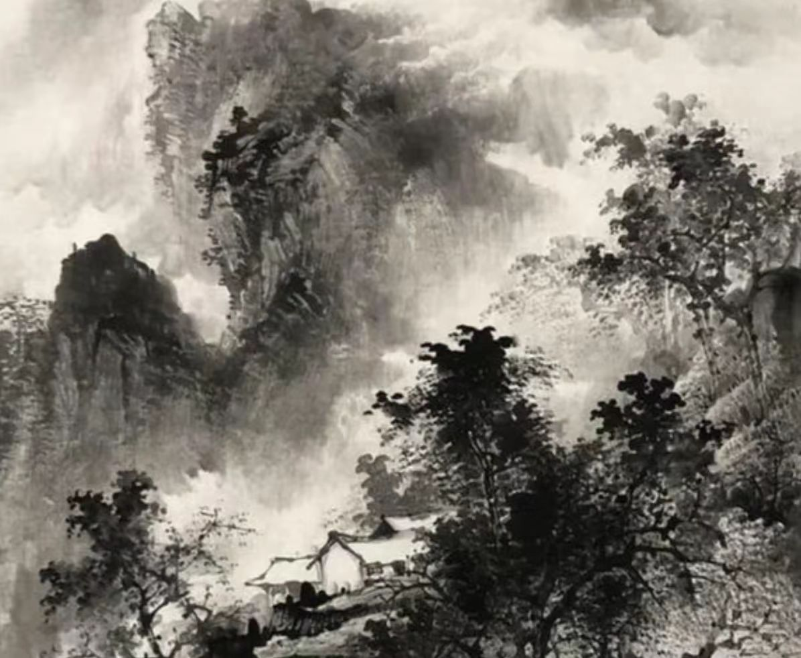 |
玄青 | #3b3a4e | R:59 G:58 B:78 | C:77 M:73 Y:46 K:39 |
玄青色是一种深邃而带有青调的墨黑色，如夜空尽头透出的暗蓝光泽，既含「玄」的幽远神秘，又具「青」的冷峻气息，似青铜器历经岁月后的沉静包浆。 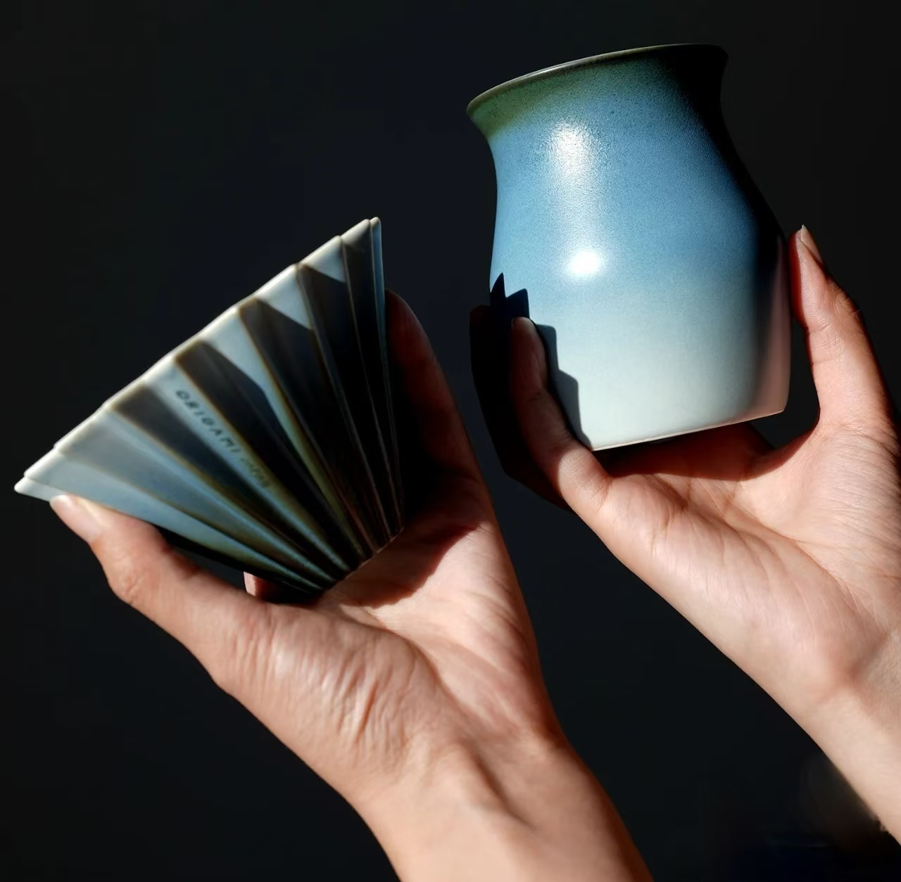 |
乌黑 | #1c171a | R:28 G:23 B:36 | C:71 M:70 Y:63 K:78 |
乌黑色是一种浓郁纯粹的深黑色，如乌鸦羽毛般乌亮润泽，既厚重如漆，又泛着隐隐的光华，透出庄重而灵动的东方韵味。 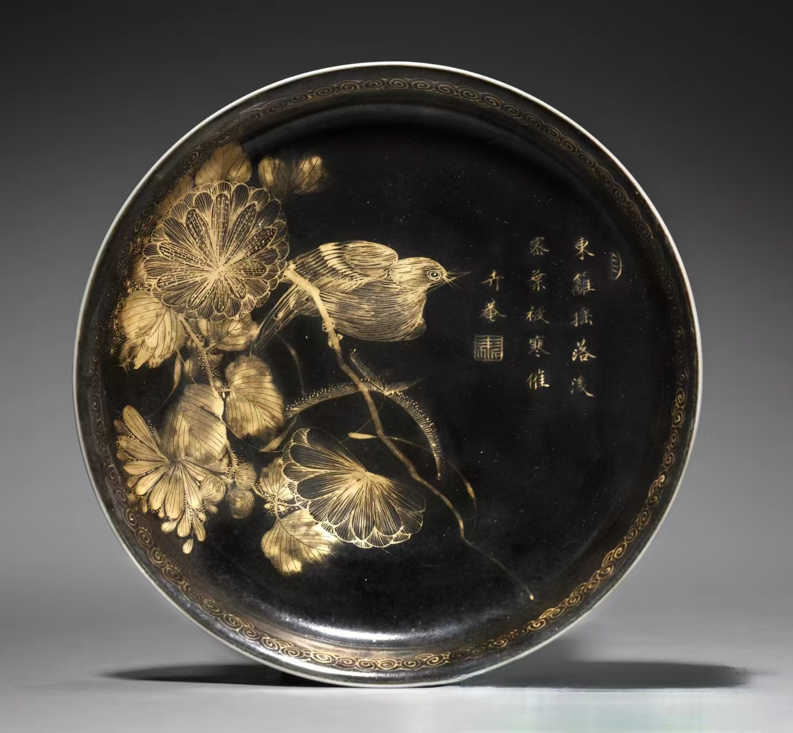 |
漆黑 | #0f0b0b | R:15 G:11 B:11 | C:72 M:68 Y:66 K:85 |
漆黑是一种极致纯粹的深黑色，浓重如未化开的松烟墨，又似无月之夜吞噬一切光线的深渊，带有近乎压迫感的沉静与神秘。 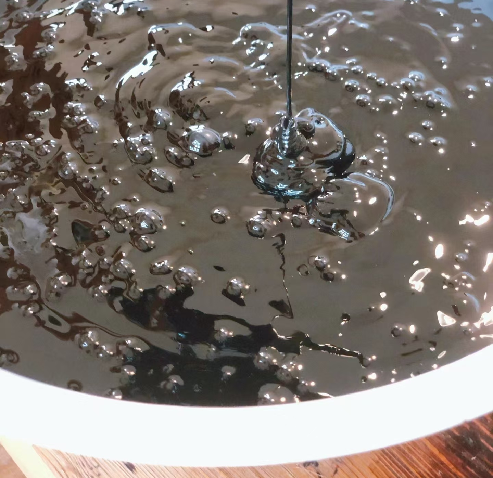 |
黛色 | #221b2d | R:34 G:27 B:45 | C:80 M:80 Y:52 K:66 |
黛色是一种青黑交融的沉静色调，似远山雾霭中透出的墨青，既有「黛石」画眉的幽深，又含烟岚浮动的朦胧诗意。 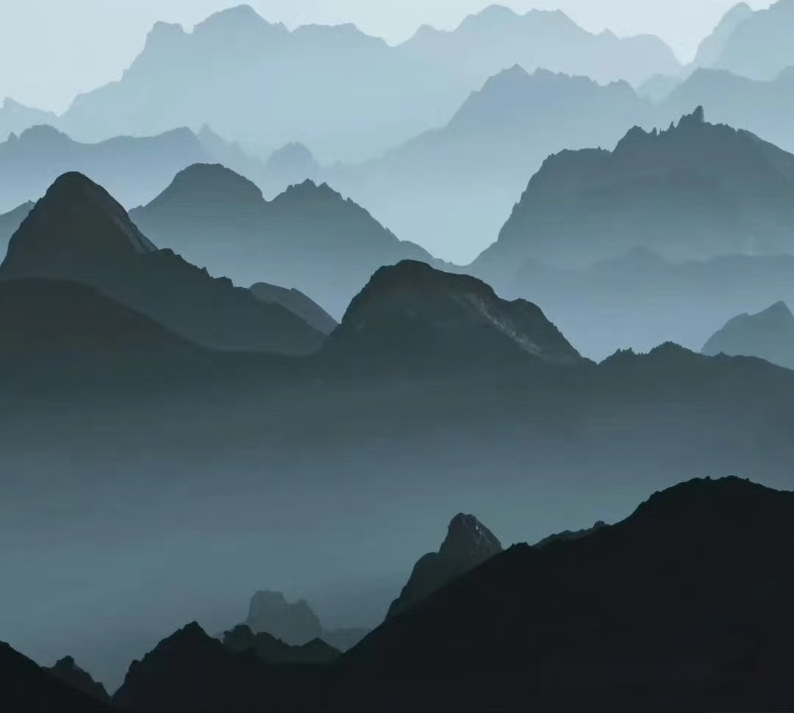 |
皂色 | #43403b | R:67 G:64 B:59 | C:64 M:60 Y:64 K:49 |
皂色是一种浓重而略带褐调的深黑色，如同皂角果实沉淀的暗沉色泽，既有草木染的自然朴拙，又透出历经岁月后的温润光泽。 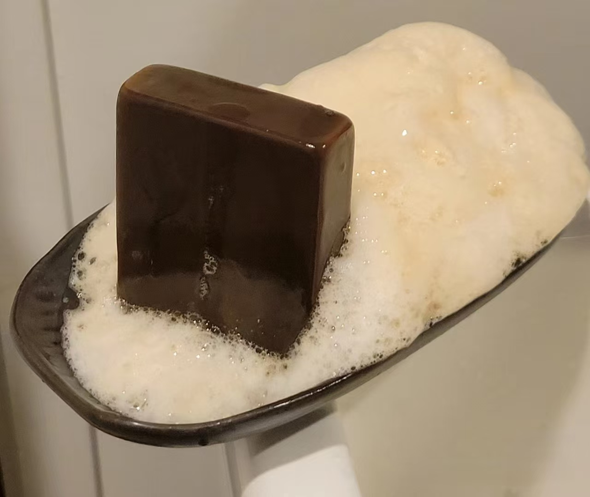 |
苍黑 | #395260 | R:57 G:82 B:96 | C:41 M:15 Y:0 K:62 |
苍黑色是一种深沉而带有青灰调的墨色，如暮色中的远山轮廓，既有苍茫的天穹之韵，又含黑铁的冷峻质感，透出古朴而雄浑的自然力量。 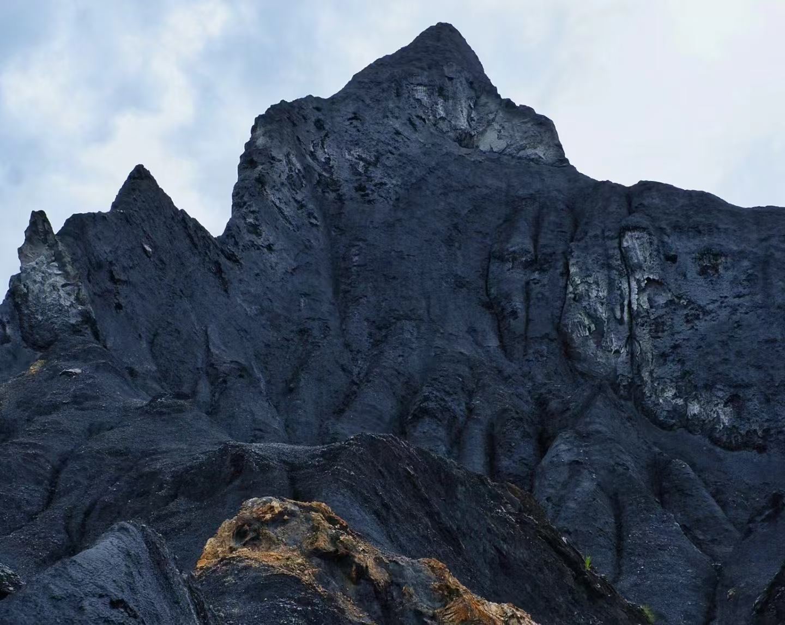 |
钢青 | #142334 | R:20 G:35 B:52 | C:100 M:82 Y:51 K:64 |
钢青色是一种冷峻而带有金属光泽的深青灰色，如淬火后的剑刃边缘，既含钢铁的凛冽质感，又泛出青靛般的幽暗锋芒，象征刚硬与锐利的极致结合。 
|
沙鱼灰 | #35333C | R:53 G:51 B:60 | C:76 M:70 Y:51 K:60 |
沙鱼灰色是一种冷峻而带有青灰调的浅灰色，如同鲨鱼背部的暗哑色泽，既有深海生物的凛冽质感，又透出岩石般的粗粝气息，形成危险而静谧的自然隐喻。 |
河豚灰 | #393733 | R:57 G:55 B:51 | C:64 M:57 Y:60 K:67 |
河豚灰色是一种微妙而带有浊调的浅灰褐色，如同河豚膨胀时腹部的斑驳表皮，既含沙砾的粗粝感，又透出生物特有的柔韧质地，在危险与呆萌之间形成奇妙的视觉平衡。 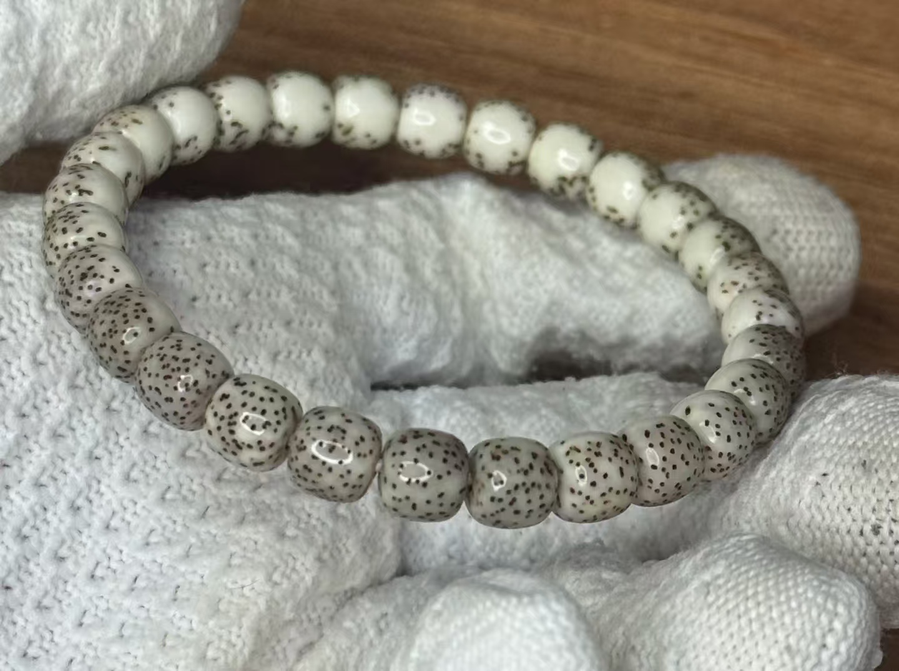 |
长石灰 | #363433 | R:54 G:52 B:51 | C:67 M:60 Y:57 K:68 |
长石灰是一种沉稳而带有暖调的浅灰褐色，如同被岁月风化的石灰岩壁，既有矿物的干燥质感，又透出阳光长期曝晒后的微暖底色，形成质朴而耐看的中间色调。 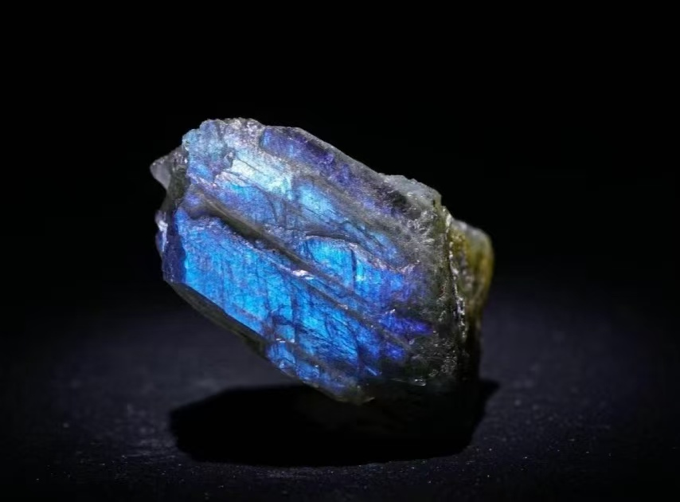 |
黑色 | #000000 | R:0 G:0 B:0 | C:75 M:68 Y:67 K:90 |
黑色是最为深邃纯粹的色彩，如同没有星月的永夜或浓墨凝固的瞬间，能吞噬一切光线却又蕴含无限可能。它是所有颜色的终极归宿，也是所有色彩的潜在起源——在东方哲学中被称为「玄色」，既是终结，亦是太初。 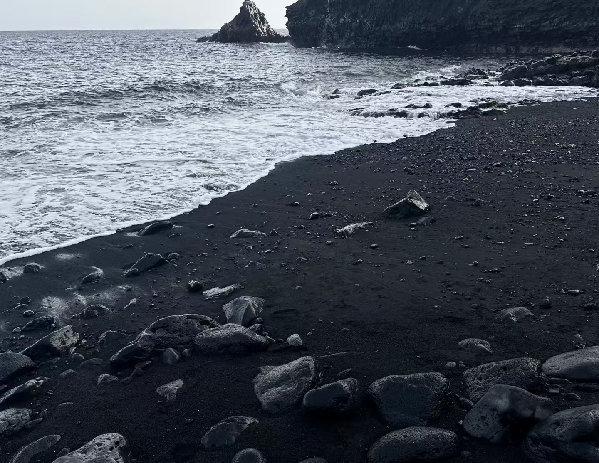 |
|---|